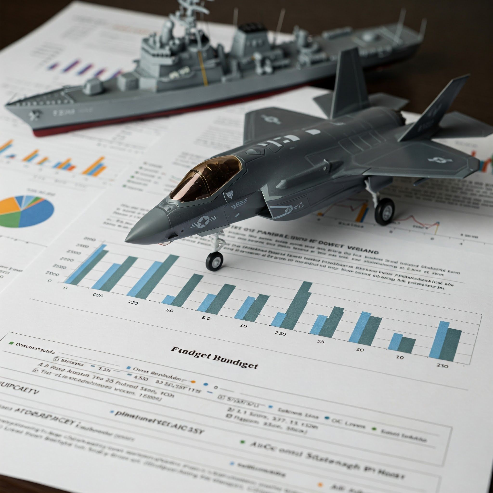

國內政治
預算爭議下的國安困境：台灣國防預算占GDP比例引發多方角力
美方要求提高至GDP 10%，台灣官員：恐排擠其他重要支出。
美方要求提高至GDP 10%，台灣官員：恐排擠其他重要支出。
深入分析賴清德總統宣布恢復軍事審判制度的背景、爭議與民意反應，探討國家安全與軍人人權保障之間的平衡。
深入分析新台幣急速升值對台灣經濟、產業與投資的多面向影響，探討央行政策、國際因素與未來趨勢。
深度分析台灣核三廠除役後正式進入非核家園時代，探討核電政策轉變、能源結構調整、以及立法院核管法修正案對未來能源政策的影響。
 國際政治
國際政治
暫無新聞。
 金融財經
金融財經
暫無新聞。